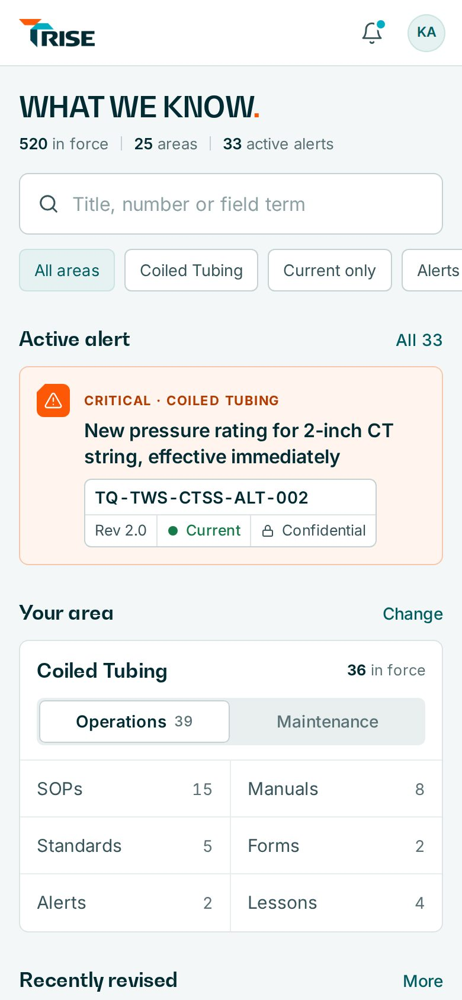
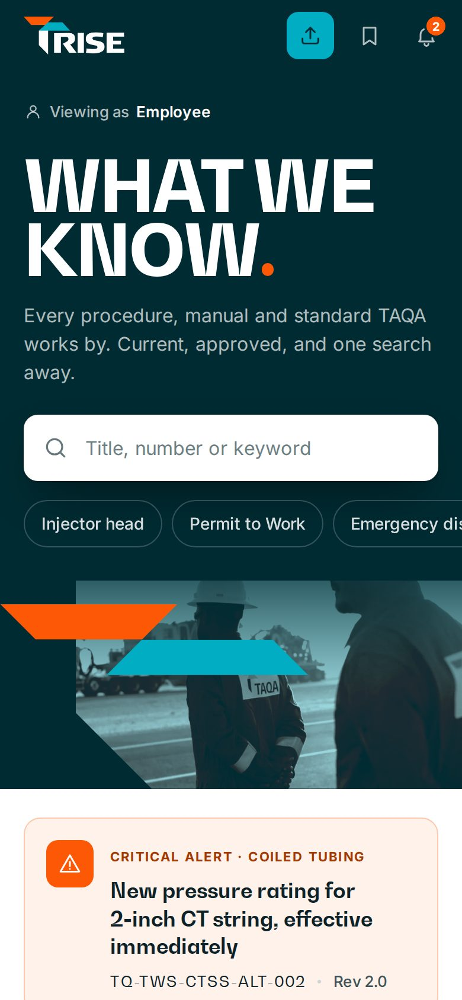
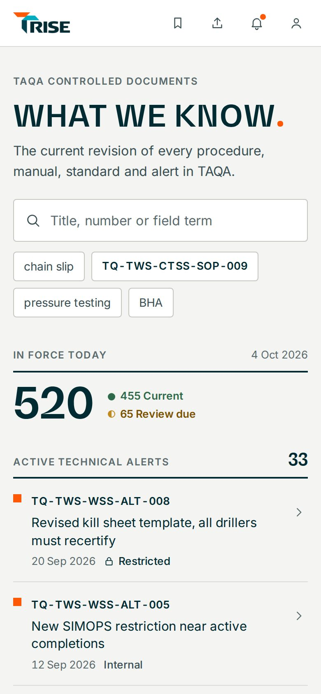
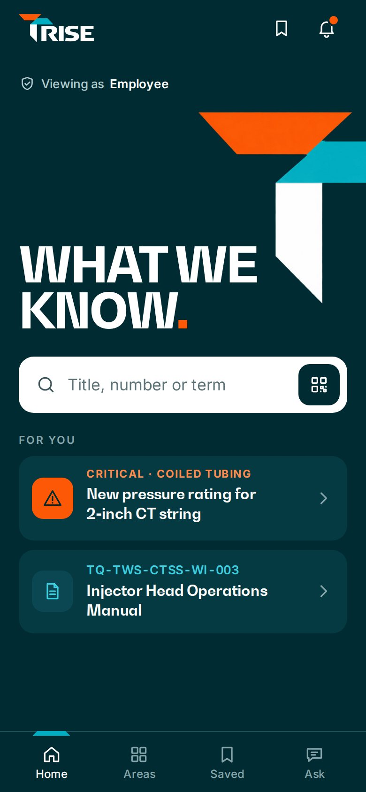
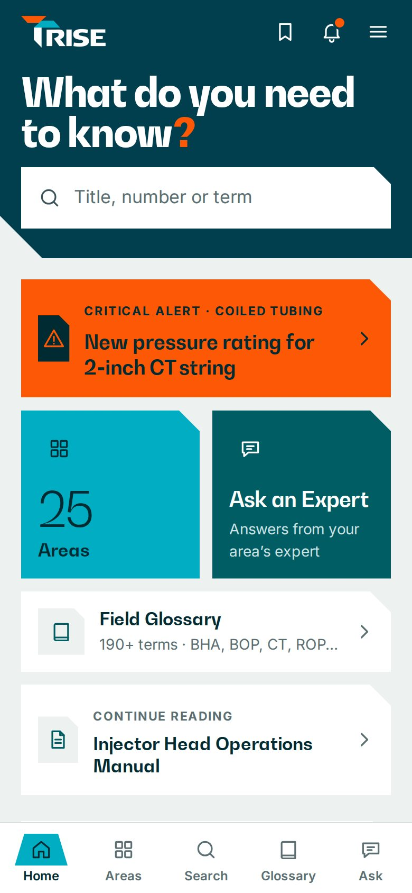

Design review · October 2026
Six design directions for RISE
How TAQA's controlled-document and field-knowledge platform could look and feel, on the phone and on the desktop.

Instrument
Flagship
Atlas
BeaconFull Stop

RisePrepared by TAQA Learning Center · For review · Not yet built